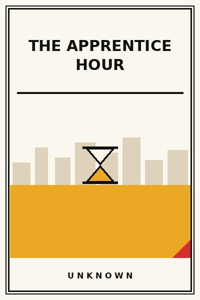

The Apprentice Hour
Craft speed in an era of shallow automations.
READ FULL BREAKDOWN (FREE) →The Big Idea
True speed in craft does not come from shallow shortcuts; it comes from spending the apprentice hours mastering fundamental hand tools.
Key Lessons
The Fallacy of the Instant Expert
AI prompts and templates create a convincing veneer of skill, but real problem solving requires deep underlying taste.
The Daily Repetition
Mastery is built through unglamorous daily drills performed long after the novelty has evaporated.
Sweeping the Floor
Apprentices historically spent years cleaning tools because maintaining instruments teaches respect for the work.
Copying Masterpieces
The fastest path to developing original voice is transcribing and dissecting classic works line by line.
Feedback Under Pressure
A great master does not praise mediocre work to protect feelings; they point out the flaw with surgical directness.
Taste Before Speed
Fast production of tasteless junk is worse than slow delivery of excellence.
The Emergence of Mastery
After thousands of apprentice hours, technique fades into the subconscious and genuine art emerges.
The Graveyard Proves It
Where this advice breaks: Where this advice breaks: dogmatic manual traditionalism when automated software already solves the problem with zero error rate.
Read the autopsy: commodore-64 →